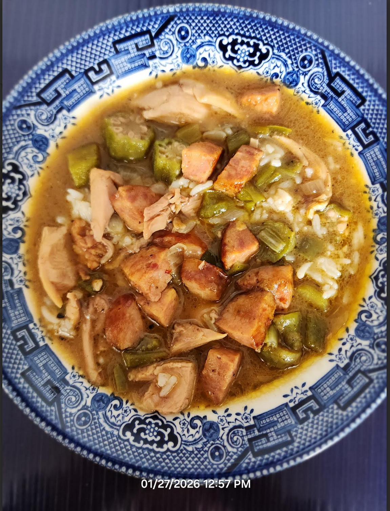

Chicken Sausage Gumbo

Ingredients
- 3-4 lbs of bone-in chicken
- 1 lb smoked sausage
- 1 C oil
- 1 C flour
- 1 large onion, chopped
- 1 bell pepper, chopped
- 1 stalk celery, chopped
- 4-6 green onions, chopped
- 1 tbs parsley
- Salt, pepper, garlic powder, and Tabasco sauce to taste
Directions
- Make Roux: Cook oil and flour to a dark brown roux. Add onion, bell pepper, and celery; remove from heat and stir until cooled.
- Prep Chicken: Cut chicken into 8 pieces and season with salt, red/black/white pepper, and garlic powder.
- Start Broth: Place chicken in a stock pot, cover with water, add roux, bring to a boil, then simmer 45 minutes, skimming as needed.
- Debone: Remove chicken, debone, discard bones, and return meat to the pot.
- Add Sausage: Add smoked sausage and 1½ quarts hot water; simmer another 45 minutes.
- Finish: Add green onions, parsley, and Tabasco; adjust seasoning. Simmer 10-15 minutes more.
- Serve: Ladle over rice.
Chef's Notes
- Dark meat cuts like legs, thighs, and wings and preferable because they will stay tender during long cooking. Avoid chicken breasts, which tend to become tough when simmered for extended periods. If you prefer breast meat, season it and add it only in the last 10-15 minutes of simmering so it stays tender.
The Gumbo Page
Michael Fritsche
mbf@fritsche.org